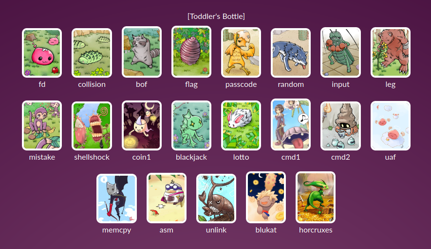
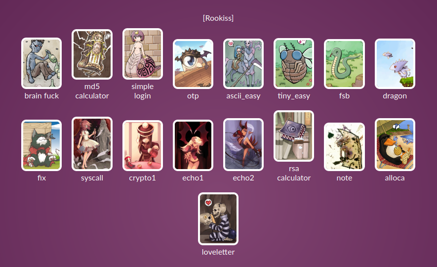
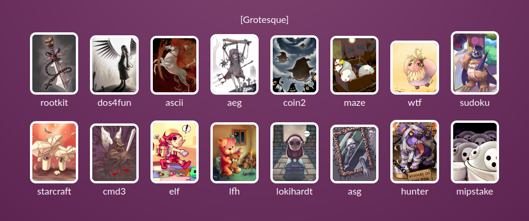
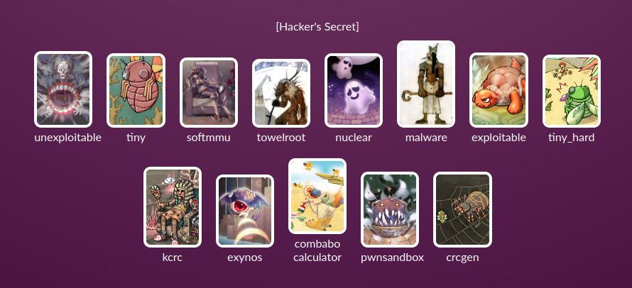

Linux Binary Exploitation Series (with pwnable.kr)
There’s no use talking about the problem unless you talk about the solution.
This is a kick-off post for the series of post on The War Game pwnable.kr. It’s focused on Linux Exploitation.
To get gpdates about this blog series you can subscribe here
Recently a friend of mine suggested me a WarGame site called pwnable.kr, which is a series of Linux exploitation CTF style challenges. Since a long time I wanted to polish my exploitation skills but I was distracted by different projects, but once I and visiting the website it looked interesting and working on these challenges would be a clear goal, so I said why not, let’s do it. Well obviously I did look for reviews on the internet for this War Game and they were pretty positive and lots of people have already posted the solution so this motivated me further to solve these challenges.
Since there are lots of solutions out there I will not refer to any of them and try to solve these challenges myself and in case I decide to refer to those solutions then, in all honesty, I will mention it. Once I have managed to solve these challenges, I will then compare my solution to other public solution and see if I could have taken a better approach.
Motivation
What caught my attention about this website was the Artwork, I loved it, and other major reason being these are challenges of various difficulty which goes as Toddler’s Bottle(Easy), Rookiss(Medium), Grotesque(Hard), Hacker’s Secret(1337). The author of the game suggests that you can post the solutions for Easy(Toddler’s Bottle’s) challenges but not for other levels, at best you can post some suggestion. To respect it, that’s what I will do, solutions and suggestion.
So fine artwork which you will see on the website




Know the Basics
Its always good to know where you are and where you want to reach. You need to have some basic knowledge to make your way a little easy through these ways
- Basic knowledge of how stack-overflow works and what a memory corruption is in general.
- A basic understanding of ELF file format and what information can it give about the program, since we are exploiting on Linux system knowing about it will take you a long way. ELF is to Linux, what exe is to Windows, an executable program.
- Good understanding of what Process and Threads are, and how they work.
- Basics of writing and compiling x86/86_64 assembly code.
- A basic understanding of process memory like Heap, Stack works, how is it allocated/freed etc,
But, don’t get intimidated by all above-mentioned points, if you don’t know all those stuff don’t worry, as we progress during the series I will point out basic concepts you need to know to solve a particular challenge and what will you learn by solving these challenges. I will try to explain those concepts if not will point you out to appropriate sources to catch-up.
Tools for the Trade
Tooling is a very important part of any trade-craft so here are some of the tools we are going to use during the series:
- Ghidra - is a disassembly/decompilation tool primarily used for static reverse engineering. This is my replacement for IDA-Pro.
- Radare2 - is a suite of tool for reverse engineering, this project bundles(rax2, rabin2, rasm2, etc). This project is simply amazing, it is emacs for reversing. We will use it for both dynamic/static analysis, shellcode, patching and many binary related chores for which otherwise you would have got to write a script.
- gdb - for dynamic debugging, it’s a de-facto tool for debugging on Linux platform. But vanilla gdb is very painful so I will use it along with gef gdb plugin which is written in python which the experience of using gdb amazing. The Github page of the project will tell you how to setup the tool and the documentation is also very good.
- Python 3 - any scripting language is fine, I am choosing this as I am comfortable with python and there are lots of tools already written in python which will save our time and help us focus on exploitation.
- pwntools - This library is CTF framework and exploit development library written in python. It is going be a very important tool in our arsenal for writing exploit script and other automation need to complete the challenge(like ssh, socket, etc). The package is very stable and very beautifully written with very good documentation and also installation is pretty easy. If you don’t know anything about this library don’t worry, neither did I when I started solving these challenges.
If you want to follow the progress of this series you can flow the tag pwnable-kr on this website.
Solution Post
Toddler’s Bottle
- Post not found: binary-exploitation-pwnable-kr-level-1 fd
- Post not found: binary-exploitation-pwnable-kr-level-2 collision
- Post not found: binary-exploitation-pwnable-kr-level-3 bof
- Post not found: binary-exploitation-pwnable-kr-level-4 flag
- Post not found: binary-exploitation-pwnable-kr-level-5 passcode
- Post not found: binary-exploitation-pwnable-kr-level-6 random
- input
- leg
- mistake
- shellshock
- coin1
- blackjack
- lotto
- cmd1
- cmd2
- uaf
- memcpy
- asm
- unlink
- blukat
- horcruxes
To get gpdates about this blog series you can subscribe here
Happy Hacking